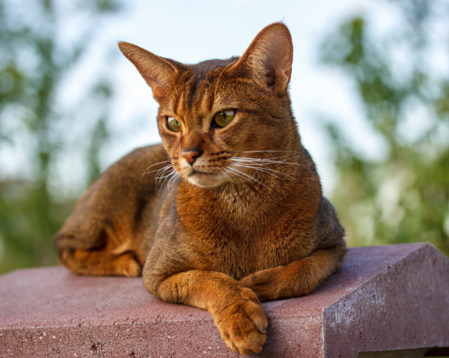
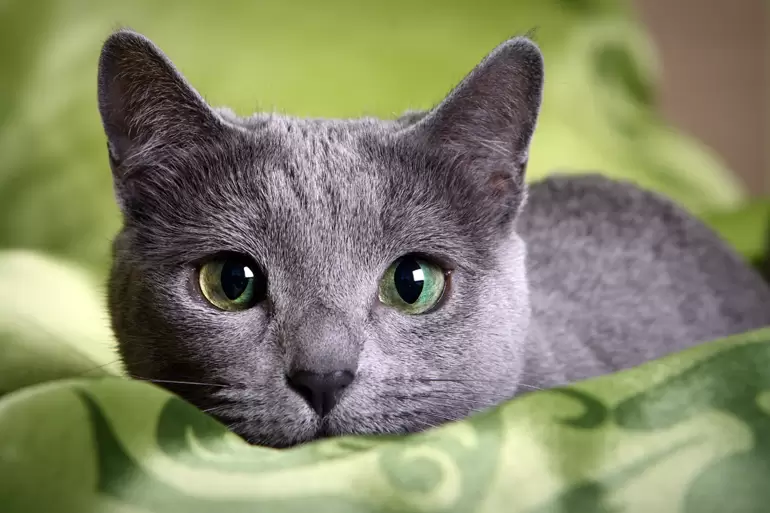

SECCIÓN GATOS
Orange Tabby
A los gatos naranjas también se les llama gatos"Orange Tabby" y su pelaje rayado puede variar en tonos desde rojo anaranjado a amarillo dorado. Además, el patrón atigrado de estos felinos es uno de los más antiguos y tienen muchos rasgos en común con los gatos monteses. Tampoco requiere muchos cuidados gracias a su robusto sistema inmunológico, adaptándose fácilmente a cualquier tipo de ambiente tanto en interior como en exterior. Su esperanza de vida ronda los 15 años.
Abisinio
El gato Abisinio es una raza de gato. Es una raza popular debido a su apariencia física y su personalidad. Tanto en reposo como en movimiento, este animal muestra una gran elegancia y armonía en sus movimientos. Es una amable, pero fuerte mascota, bastante juguetona. Puedes contar con que un gato abisinio con la debida documentación cuesta alrededor de los 700 euros. A menudo también se pueden adquirir gatos adultos excluidos de la cría por un precio más conveniente. El gato abisinio puede vivir mucho tiempo: muchos de ellos llegan a cumplir hasta 15 años y más.
Bengala
El Bengalí es una raza de gato doméstico desarrollada para parecerse a los felinos salvajes exóticos tales como son los leopardos, ocelotes, margays, etc. El gato bengala, fue un resultado fortuito del cruce casual entre un gato doméstico y una hembra gato leopardo. El precio en los gatos bengalíes que podemos encontrar en los criaderos españoles puede oscilar entre los 900 y los 2500 euros dependiendo de la calidad que trabaje cada criador. Los principales factores que hacen variar el precio en este rango son: morfología, colores, contraste, calidad del pelo etc. El bengalí tiene una esperanza de vida de entre 9 y 15 años. ¡Si tienes uno, cuídale mucho!

Azul Ruso
El Azul Ruso es una de las razas de gato doméstico más antiguas y populares del mundo. Es reconocida por todas las organizaciones felinológicas internacionales. Son gatos de tamaño medio y pelo corto plateado, fácilmente distinguibles de otras razas. El gato siberiano, el azul ruso o el americano de pelo corto son también bastante longevos y pueden llegar a alcanzar los 20 años. Los gatos azules rusos son callados y sensibles; a veces se muestran incluso tímidos y reservados, pero tienen fama de ser enormemente fieles al ser humano que han elegido.